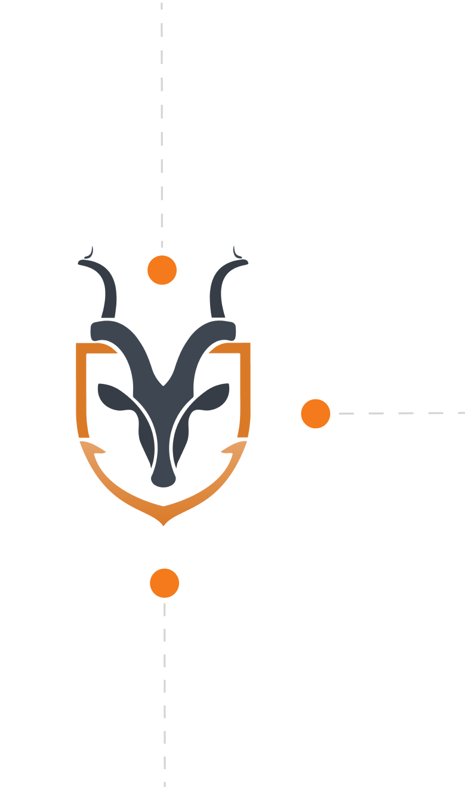

<div class="ecosystem">
    <div class="content">
        <div class="originators">
            <div class="content">
                <span class="title">
                    Trade Originators
                </span>
                <p>
                    Small, medium, and large enterprises can leverage
                    the Antelope <br> protocol to raise capital for trades, 
                    borrow collateral for loans, 
                </p>
                <p>
                    issue tokenized invoices, and access 
                    a diverse range of logistic services. 
                    The platform connects enterprises with 
                    suppliers, financiers, and service providers, 
                    boosting their potential for growth.
                </p>
            </div>
            <div class="image">
                
            </div>
        </div>
        <div class="btc-image">
            
        </div>
        <div class="middle-section">
            <div class="section-heading">
                <span class="section-title">
                    The Antelope <br>   
                    Ecosystem
                </span>
                
            </div>
            <div class="liquidity-providors">
                
                <div class="content">
                    <span class="title">
                        Liquidity Providers
                    </span>
                    <p>
                        Yield Farmers can participate in decentralized 
                        trade financing to generate stable and 
                        short-term returns by investing in assets 
                        with tangible value in the real world. 
                        Additionally, they gain access to derivatives 
                        and tokenized risk exposures, specially designed 
                        to suit the trade and logistics sector.
                    </p>
                </div>
            </div>
        </div>
        <div class="service-institutions">
            <div class="content">
                <span class="title">
                    Service Institutions
                </span>
                <p>
                    Institutional entities and crypto-based companies 
                    can offer financial and non-financial services on 
                    Antelope, such as insurance and investment opportunities, 
                    entitling them to promising revenue shares through 
                    transaction fees and rewards. Service Institutions 
                    are essential to the ecosystem, forwarding its 
                    vision and broadening its scope.  
                </p>
            </div>
            <div class="image">
                
            </div>
        </div>
    </div>
</div>
